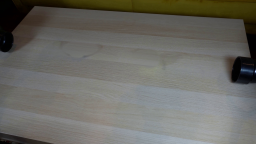
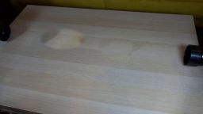

← Smoke 总览
0033
GPT-6.1-Sol · vision-agent · 256×144 · 20 frames / 4 fps
当前任务输入Static locked-off single-shot with fixed frame throughout filmed with constant framerate in real-time. The scene shows a realistic scientific demonstration. The scene only contains the described setup and actions. A light-colored wooden tabletop with two pipes at the edges. The blue and the yellow tennis ball roll out of the pipes and collide with the same speed.
最终视频
生成代码 · 输入与输出契约
保存的候选：5 · output tokens：8775 · reasoning output tokens：4302 · 耗时：271s
完整工具调用与实际返回图片
完整rollout记录11次顶层工具调用，向模型返回4张图片。嵌套工具名来自调用代码；下面图片来自匹配call_id的实际工具输出，区别于模型自述。
exec · exec_command · 0张返回图片
call_hDSBbHlkm66GBiyWTkvm9AAO · 调用 2026-11-06T19:03:27.320Z → 返回
text(await tools.exec_command({cmd:"pwd && rg --files -g 'prompt.txt' -g 'GENERATION_RULES.md' -g 'AGENTS.md' -g '*.py' -g '*.png' -g '*.json'","max_output_tokens":5000}));
exec · exec_command · 0张返回图片
call_kpw9xn2CIRIGpFBmmq31SlS6 · 调用 2026-11-06T19:03:30.445Z → 返回
text(await tools.exec_command({cmd:"ls -la","max_output_tokens":4000}));
text(await tools.exec_command({cmd:"cat prompt.txt GENERATION_RULES.md","max_output_tokens":10000}));
text(ALL_TOOLS.filter(x=>/image|video|file|python/.test(x.name+" "+x.description)));
exec · exec_command, view_image · 1张返回图片
call_zSpyKD7e9w1vJKYpvwmROTtL · 调用 2026-11-06T19:03:35.718Z → 返回
text(await tools.exec_command({cmd:"cat task_spec.json artifact_io.py","max_output_tokens":6000}));
const im=await tools.view_image({path:"workspace/first_frame.png"});image(im.image_url);

返回图片SHA b3f84dafabea847a
exec · exec_command, view_image · 0张返回图片
call_RSTHc7Egf8L76KXzWFH6F9Rb · 调用 2026-11-06T19:03:51.476Z → 返回
text(await tools.exec_command({cmd:"python - <<'PY'\nfrom PIL import Image\nim=Image.open('first_frame.png')\nim.resize((1024,576)).save('.tmp/first_enlarged.png')\nPY","max_output_tokens":1000}));
image((await tools.view_image({path:"workspace/.tmp/first_enlarged.png"})).image_url);
exec · exec_command · 0张返回图片
call_eNmWLeWZfsUi8s2JopjPdv6g · 调用 2026-11-06T19:04:22.957Z → 返回
text(await tools.exec_command({cmd:"python - <<'PY'\nimport numpy as np\nfrom PIL import Image\nim=np.asarray(Image.open('first_frame.png'))\nfor x,y in [(76,50),(149,58)]:\n print(x,y)\n for j in range(y-9,y+10):\n print(j, ' '.join('%3d'%max(0,int(im[j,i,2])-int(im[j,i,0])) if x==76 else '%3d'%max(0,int(im[j,i,1])-int(im[j,i,2])) for i in range(x-11,x+12)))\nPY","max_output_tokens":3500}));
exec · exec_command · 0张返回图片
call_CpYH8ooTTvYSKJknzTr7GWk5 · 调用 2026-11-06T19:04:56.800Z → 返回
text(await tools.exec_command({cmd:"cat > generate.py <<'PY'\nfrom pathlib import Path\nimport numpy as np\nfrom PIL import Image, ImageFilter, ImageDraw\nimport artifact_io\n\nROOT = Path(__file__).resolve().parent\nSOURCE = np.asarray(Image.open(ROOT / 'first_frame.png').convert('RGB'), dtype=np.float32)\nH, W = SOURCE.shape[:2]\nY, X = np.mgrid[:H, :W].astype(np.float32)\n\n\ndef sample(a, x, y):\n \"\"\"Bilinear pixel resampling, including subpixel motion.\"\"\"\n x = np.clip(x, 0, a.shape[1] - 1.001)\n y = np.clip(y, 0, a.shape[0] - 1.001)\n ix, iy = np.floor(x).astype(int), np.floor(y).astype(int)\n fx, fy = (x - ix)[..., None], (y - iy)[..., None]\n if a.ndim == 2:\n a = a[..., None]\n return ((a[iy, ix] * (1-fx) + a[iy, ix+1] * fx) * (1-fy)\n + (a[iy+1, ix] * (1-fx) + a[iy+1, ix+1] * fx) * fy)\n\n\ndef blurred(a, radius):\n return np.asarray(Image.fromarray(np.uint8(np.clip(a, 0, 255))).filter(ImageFilter.GaussianBlur(radius)), dtype=np.float32)\n\n\ndef removal_mask(cx, cy, color):\n # Include the original soft cast shadows as well as the colored spheres.\n if color == 'blue':\n ball = np.sqrt(((X-cx)/11.0)**2 + ((Y-cy)/10.0)**2)\n cast = np.sqrt(((X-(cx+3))/23.0)**2 + ((Y-(cy-2))/9.0)**2)\n else:\n ball = np.sqrt(((X-cx)/11.8)**2 + ((Y-cy)/11.2)**2)\n cast = np.sqrt(((X-(cx-7))/13.5)**2 + ((Y-(cy-1))/10.0)**2)\n return np.clip((1.0-np.minimum(ball,cast))/0.25, 0, 1)\n\n\nobjects = [(np.array([76.6, 49.8]), 7.1, 'blue'),\n (np.array([149.3, 58.3]), 7.9, 'yellow')]\nbackground = SOURCE.copy()\nfor center, radius, color in objects:\n cx, cy = center\n mask = removal_mask(cx, cy, color)\n # Reconstruct the tabletop from adjacent pixels along its slanting grain.\n left = cx - (25 if color == 'blue' else 23)\n right = cx + (29 if color == 'blue' else 24)\n slope = 0.115\n lx = np.full_like(X, left)\n rx = np.full_like(X, right)\n lval = sample(SOURCE, lx, Y+slope*(left-X))\n rval = sample(SOURCE, rx, Y+slope*(right-X))\n frac = np.clip((X-left)/(right-left), 0, 1)[...,None]\n smooth = lval*(1-frac)+rval*frac\n # Carry fine native wood grain into the reconstructed region.\n texture = sample(SOURCE-blurred(SOURCE,1.4), X+35, Y+35*slope)\n fill = smooth + texture * 0.45\n background = background*(1-mask[...,None]) + fill*mask[...,None]\n\n# The original sphere pixels retain the source illumination and defocus.\n# Moving these differences also carries the photographed contact/cast shadows.\nresiduals = []\nfor center, radius, color in objects:\n cx,cy = center\n mask = removal_mask(cx,cy,color)\n delta = (SOURCE-background)*mask[...,None]\n residuals.append(delta)\n\np0, p1 = objects[0][0], objects[1][0]\naxis = (p1-p0)/np.linalg.norm(p1-p0)\ndiameter = objects[0][1]+objects[1][1]\ncontact_time = 1.25\nspeed = (np.linalg.norm(p1-p0)-diameter)/(2*contact_time)\nrestitution = 0.94\nrolling_deceleration = 0.48\n\n\ndef position(index, t):\n sign = 1 if index == 0 else -1\n initial = objects[index][0]\n if t <= contact_time:\n travel = speed*t\n else:\n dt = t-contact_time\n travel = speed*contact_time - restitution*speed*dt + .5*rolling_deceleration*dt*dt\n return initial + sign*axis*travel\n\n\nframes=[]\nfor k in range(20):\n t=k/4\n canvas = background.copy()\n # The farther ball is composed first at the instant of contact.\n for j in range(2):\n center,radius,color = objects[j]\n pos=position(j,t)\n shift=pos-center\n moved=sample(residuals[j],X-shift[0],Y-shift[1])\n canvas+=moved\n frames.append(np.uint8(np.clip(np.rint(canvas),0,255)))\nframes=np.stack(frames)\nframes[0]=SOURCE.astype(np.uint8)\n\n# Preserve a reviewable first candidate before exporting final artifacts.\ncandidate = ROOT / 'candidate_01'\ncandidate.mkdir(exist_ok=True)\nnp.save(candidate/'rgb.npy',frames)\nImage.fromarray(np.uint8(np.clip(background,0,255))).save(candidate/'tabletop.png')\nsheet=Image.new('RGB',(256*5,164*4),(25,28,35))\ndraw=ImageDraw.Draw(sheet)\nfor k in range(20):\n x,y=(k%5)*256,(k//5)*164\n sheet.paste(Image.fromarray(frames[k]),(x,y+20))\n draw.text((x+5,y+3),f'{k:02d} {k/4:.2f}s',fill=(255,255,255))\nsheet.save(candidate/'contact_sheet.png')\nartifact_io.save(frames, ROOT)\nprint(f'Saved {frames.shape}, {frames.dtype}; initial speed {speed:.2f} px/s; contact at {contact_time:.2f}s')\nPY\npython generate.py","max_output_tokens":2000}));
exec · view_image · 1张返回图片
call_ORaDEhVHnRoPbCQ0Ek12b898 · 调用 2026-11-06T19:05:07.661Z → 返回
image((await tools.view_image({path:"workspace/candidate_01/contact_sheet.png"})).image_url);
image((await tools.view_image({path:"workspace/candidate_01/tabletop.png"})).image_url);

返回图片SHA 5c3ba6ca3db71eee
exec · exec_command, view_image · 1张返回图片
call_R9Vp8lSJUHlqIbLE2lNIllTn · 调用 2026-11-06T19:05:52.321Z → 返回
text(await tools.exec_command({cmd:"cp generate.py candidate_01/generate.py\npython - <<'PY'\np='generate.py'\ns=open(p).read()\na=s.index('def removal_mask(')\nb=s.index('\\n\\nobjects =',a)\ns=s[:a]+'''def removal_mask(cx, cy, color):\n # Broad feathered support includes the camera's soft ball/shadow edges.\n if color == 'blue':\n distance = np.sqrt(((X-(cx+2))/25.0)**2 + ((Y-(cy-1))/12.0)**2)\n else:\n distance = np.sqrt(((X-(cx-3))/19.5)**2 + ((Y-cy)/12.0)**2)\n return np.clip((1.20-distance)/0.22,0,1)\n'''+s[b:]\na=s.index(' # Reconstruct the tabletop')\nb=s.index('\\n# The original sphere',a)\ns=s[:a]+''' # Clone native clean wood along the grain, correcting the gentle lighting\n # gradient from a ring surrounding each removed sphere and shadow.\n offset = -39 if color == 'blue' else 40\n donor = sample(SOURCE, np.maximum(X+offset,14), Y+offset*0.115)\n rx = 25 if color == 'blue' else 19.5\n cx_ring = cx+2 if color == 'blue' else cx-3\n rr = np.sqrt(((X-cx_ring)/rx)**2 + ((Y-cy)/12)**2)\n ring = (rr>1.20)&(rr<1.48)&(X>16)&(X<224)\n dx,dy=(X-cx)/25,(Y-cy)/12\n design = np.stack([np.ones_like(X),dx,dy],axis=-1)\n difference=blurred(SOURCE,2.5)-blurred(donor,2.5)\n correction=np.linalg.lstsq(design[ring],difference[ring],rcond=None)[0]\n fill=donor+design@correction\n background = background*(1-mask[...,None]) + fill*mask[...,None]\n'''+s[b:]\ns=s.replace('delta = (SOURCE-background)*mask[...,None]','delta = (SOURCE-background) * (mask>0)[...,None]')\ns=s.replace(\"ROOT / 'candidate_01'\",\"ROOT / 'candidate_02'\")\nopen(p,'w').write(s)\nPY\npython generate.py","max_output_tokens":1000}));
image((await tools.view_image({path:"workspace/candidate_02/tabletop.png"})).image_url);
image((await tools.view_image({path:"workspace/inspection.png"})).image_url);

返回图片SHA b9f384ec925b0949
exec · exec_command, view_image · 1张返回图片
call_LnHRTqyBctTM8yU5twFh1gXy · 调用 2026-11-06T19:06:21.574Z → 返回
text(await tools.exec_command({cmd:"cp generate.py candidate_02/generate.py\npython - <<'PY'\ns=open('generate.py').read()\na=s.index(' # Clone native clean wood')\nb=s.index('\\n# The original sphere',a)\ns=s[:a]+''' # Reconstruct each missing strip using clean pixels along its wood grain.\n left, right = cx-32, cx+35\n slope=0.115\n lval=sample(SOURCE,np.full_like(X,left),Y+slope*(left-X))\n rval=sample(SOURCE,np.full_like(X,right),Y+slope*(right-X))\n frac=np.clip((X-left)/(right-left),0,1)[...,None]\n fill=lval*(1-frac)+rval*frac\n texture=sample(SOURCE-blurred(SOURCE,1.4),X+40,Y+40*slope)\n fill+=texture*0.30\n background=background*(1-mask[...,None])+fill*mask[...,None]\n'''+s[b:]\ns=s.replace(\"ROOT / 'candidate_02'\",\"ROOT / 'candidate_03'\")\nopen('generate.py','w').write(s)\nPY\npython generate.py","max_output_tokens":1000}));
image((await tools.view_image({path:"workspace/candidate_03/tabletop.png"})).image_url);
image((await tools.view_image({path:"workspace/inspection.png"})).image_url);
返回图片SHA 0d1af49534b864d8
exec · exec_command · 0张返回图片
call_tY07rIGyaLhizeGHKXntJczv · 调用 2026-11-06T19:06:47.709Z → 返回
text(await tools.exec_command({cmd:"cp generate.py candidate_03/generate.py\npython - <<'PY'\nfrom pathlib import Path\nimport numpy as np\nfrom PIL import Image\nimport shutil, subprocess\nroot=Path('.')\na=np.load('candidate_03/rgb.npy')\nassert a.shape==(20,144,256,3) and a.dtype==np.uint8\nassert np.array_equal(a[0],np.asarray(Image.open('first_frame.png').convert('RGB')))\npacked=np.load('pixels.npz')['pixels']\nassert packed.shape==(144,256,20)\nrgb=np.stack([(packed>>16)&255,(packed>>8)&255,packed&255],axis=-1).transpose(2,0,1,3).astype(np.uint8)\nassert np.array_equal(a,rgb)\nassert len(list(Path('frames').glob('*.png')))==20\nassert all(np.array_equal(a[k,:38,:20],a[0,:38,:20]) for k in range(20))\nffmpeg=shutil.which('ffmpeg')\nif ffmpeg:\n subprocess.run([ffmpeg,'-y','-loglevel','error','-framerate','4','-i','frames/%02d.png','-c:v','libx264','-crf','17','-pix_fmt','yuv420p','-movflags','+faststart','video.mp4'],check=True)\n print('Encoded video.mp4 at 4 fps for 5 seconds.')\nprint('Validated: 20 RGB frames, 256x144, uint8, exact frame 00, lossless packed pixel agreement.')\nPY","max_output_tokens":1000}));
exec · exec_command · 0张返回图片
call_VGAgBe0avLaezY5JAzhX6y7n · 调用 2026-11-06T19:07:19.076Z → 返回
text(await tools.exec_command({cmd:"python - <<'PY'\np='generate.py'\ns=open(p).read()\ns=s.replace(' canvas+=moved',' pipe_pixels = ((X < 14) & (Y < 55)) | ((X > 230) & (Y > 53) & (Y < 86))\\n canvas+=moved*(~pipe_pixels)[...,None]')\nopen(p,'w').write(s)\nPY\npython generate.py\ncp generate.py candidate_03/generate.py\npython - <<'PY'\nfrom pathlib import Path\nimport numpy as np\nfrom PIL import Image\nimport shutil, subprocess\nframes=np.load('candidate_03/rgb.npy')\nsource=np.asarray(Image.open('first_frame.png').convert('RGB'))\nassert frames.shape==(20,144,256,3) and frames.dtype==np.uint8\nassert np.array_equal(frames[0],source)\npacked=np.load('pixels.npz')['pixels']\nassert packed.shape==(144,256,20)\nrgb=np.stack([(packed>>16)&255,(packed>>8)&255,packed&255],axis=-1).transpose(2,0,1,3).astype(np.uint8)\nassert np.array_equal(frames,rgb)\nassert len(list(Path('frames').glob('*.png')))==20\nassert all(np.array_equal(frame[:55,:14],source[:55,:14]) for frame in frames)\nassert all(np.array_equal(frame[53:86,231:],source[53:86,231:]) for frame in frames)\nffmpeg=shutil.which('ffmpeg')\nif ffmpeg:\n subprocess.run([ffmpeg,'-y','-loglevel','error','-framerate','4','-i','frames/%02d.png','-c:v','libx264','-crf','17','-pix_fmt','yuv420p','-movflags','+faststart','video.mp4'],check=True)\n print('Encoded video.mp4 at 4 fps for 5 seconds.')\nprint('Validated: 20 uint8 RGB frames at 256x144; exact frame 00; packed pixels match; fixed pipes.')\nPY","max_output_tokens":1000}));
逐轮生成与修改
候选由外部harness保存，工具证据以实际保留的记录范围为准。
Candidate 1
2026-11-06T19:05:00.252910+00:00 · RGB hash 47ef402db3db833d

本轮代码修改
--- previous
+++ current
@@ -0,0 +1,117 @@
+from pathlib import Path
+import numpy as np
+from PIL import Image, ImageFilter, ImageDraw
+import artifact_io
+
+ROOT = Path(__file__).resolve().parent
+SOURCE = np.asarray(Image.open(ROOT / 'first_frame.png').convert('RGB'), dtype=np.float32)
+H, W = SOURCE.shape[:2]
+Y, X = np.mgrid[:H, :W].astype(np.float32)
+
+
+def sample(a, x, y):
+ """Bilinear pixel resampling, including subpixel motion."""
+ x = np.clip(x, 0, a.shape[1] - 1.001)
+ y = np.clip(y, 0, a.shape[0] - 1.001)
+ ix, iy = np.floor(x).astype(int), np.floor(y).astype(int)
+ fx, fy = (x - ix)[..., None], (y - iy)[..., None]
+ if a.ndim == 2:
+ a = a[..., None]
+ return ((a[iy, ix] * (1-fx) + a[iy, ix+1] * fx) * (1-fy)
+ + (a[iy+1, ix] * (1-fx) + a[iy+1, ix+1] * fx) * fy)
+
+
+def blurred(a, radius):
+ return np.asarray(Image.fromarray(np.uint8(np.clip(a, 0, 255))).filter(ImageFilter.GaussianBlur(radius)), dtype=np.float32)
+
+
+def removal_mask(cx, cy, color):
+ # Include the original soft cast shadows as well as the colored spheres.
+ if color == 'blue':
+ ball = np.sqrt(((X-cx)/11.0)**2 + ((Y-cy)/10.0)**2)
+ cast = np.sqrt(((X-(cx+3))/23.0)**2 + ((Y-(cy-2))/9.0)**2)
+ else:
+ ball = np.sqrt(((X-cx)/11.8)**2 + ((Y-cy)/11.2)**2)
+ cast = np.sqrt(((X-(cx-7))/13.5)**2 + ((Y-(cy-1))/10.0)**2)
+ return np.clip((1.0-np.minimum(ball,cast))/0.25, 0, 1)
+
+
+objects = [(np.array([76.6, 49.8]), 7.1, 'blue'),
+ (np.array([149.3, 58.3]), 7.9, 'yellow')]
+background = SOURCE.copy()
+for center, radius, color in objects:
+ cx, cy = center
+ mask = removal_mask(cx, cy, color)
+ # Reconstruct the tabletop from adjacent pixels along its slanting grain.
+ left = cx - (25 if color == 'blue' else 23)
+ right = cx + (29 if color == 'blue' else 24)
+ slope = 0.115
+ lx = np.full_like(X, left)
+ rx = np.full_like(X, right)
+ lval = sample(SOURCE, lx, Y+slope*(left-X))
+ rval = sample(SOURCE, rx, Y+slope*(right-X))
+ frac = np.clip((X-left)/(right-left), 0, 1)[...,None]
+ smooth = lval*(1-frac)+rval*frac
+ # Carry fine native wood grain into the reconstructed region.
+ texture = sample(SOURCE-blurred(SOURCE,1.4), X+35, Y+35*slope)
+ fill = smooth + texture * 0.45
+ background = background*(1-mask[...,None]) + fill*mask[...,None]
+
+# The original sphere pixels retain the source illumination and defocus.
+# Moving these differences also carries the photographed contact/cast shadows.
+residuals = []
+for center, radius, color in objects:
+ cx,cy = center
+ mask = removal_mask(cx,cy,color)
+ delta = (SOURCE-background)*mask[...,None]
+ residuals.append(delta)
+
+p0, p1 = objects[0][0], objects[1][0]
+axis = (p1-p0)/np.linalg.norm(p1-p0)
+diameter = objects[0][1]+objects[1][1]
+contact_time = 1.25
+speed = (np.linalg.norm(p1-p0)-diameter)/(2*contact_time)
+restitution = 0.94
+rolling_deceleration = 0.48
+
+
+def position(index, t):
+ sign = 1 if index == 0 else -1
+ initial = objects[index][0]
+ if t <= contact_time:
+ travel = speed*t
+ else:
+ dt = t-contact_time
+ travel = speed*contact_time - restitution*speed*dt + .5*rolling_deceleration*dt*dt
+ return initial + sign*axis*travel
+
+
+frames=[]
+for k in range(20):
+ t=k/4
+ canvas = background.copy()
+ # The farther ball is composed first at the instant of contact.
+ for j in range(2):
+ center,radius,color = objects[j]
+ pos=position(j,t)
+ shift=pos-center
+ moved=sample(residuals[j],X-shift[0],Y-shift[1])
+ canvas+=moved
+ frames.append(np.uint8(np.clip(np.rint(canvas),0,255)))
+frames=np.stack(frames)
+frames[0]=SOURCE.astype(np.uint8)
+
+# Preserve a reviewable first candidate before exporting final artifacts.
+candidate = ROOT / 'candidate_01'
+candidate.mkdir(exist_ok=True)
+np.save(candidate/'rgb.npy',frames)
+Image.fromarray(np.uint8(np.clip(background,0,255))).save(candidate/'tabletop.png')
+sheet=Image.new('RGB',(256*5,164*4),(25,28,35))
+draw=ImageDraw.Draw(sheet)
+for k in range(20):
+ x,y=(k%5)*256,(k//5)*164
+ sheet.paste(Image.fromarray(frames[k]),(x,y+20))
+ draw.text((x+5,y+3),f'{k:02d} {k/4:.2f}s',fill=(255,255,255))
+sheet.save(candidate/'contact_sheet.png')
+artifact_io.save(frames, ROOT)
+print(f'Saved {frames.shape}, {frames.dtype}; initial speed {speed:.2f} px/s; contact at {contact_time:.2f}s')Candidate 2
2026-11-06T19:05:55.670399+00:00 · RGB hash 5b292fe5fe37923b

本轮代码修改
--- previous
+++ current
@@ -26,14 +26,12 @@
def removal_mask(cx, cy, color):
- # Include the original soft cast shadows as well as the colored spheres.
+ # Broad feathered support includes the camera's soft ball/shadow edges.
if color == 'blue':
- ball = np.sqrt(((X-cx)/11.0)**2 + ((Y-cy)/10.0)**2)
- cast = np.sqrt(((X-(cx+3))/23.0)**2 + ((Y-(cy-2))/9.0)**2)
+ distance = np.sqrt(((X-(cx+2))/25.0)**2 + ((Y-(cy-1))/12.0)**2)
else:
- ball = np.sqrt(((X-cx)/11.8)**2 + ((Y-cy)/11.2)**2)
- cast = np.sqrt(((X-(cx-7))/13.5)**2 + ((Y-(cy-1))/10.0)**2)
- return np.clip((1.0-np.minimum(ball,cast))/0.25, 0, 1)
+ distance = np.sqrt(((X-(cx-3))/19.5)**2 + ((Y-cy)/12.0)**2)
+ return np.clip((1.20-distance)/0.22,0,1)
objects = [(np.array([76.6, 49.8]), 7.1, 'blue'),
@@ -42,19 +40,19 @@
for center, radius, color in objects:
cx, cy = center
mask = removal_mask(cx, cy, color)
- # Reconstruct the tabletop from adjacent pixels along its slanting grain.
- left = cx - (25 if color == 'blue' else 23)
- right = cx + (29 if color == 'blue' else 24)
- slope = 0.115
- lx = np.full_like(X, left)
- rx = np.full_like(X, right)
- lval = sample(SOURCE, lx, Y+slope*(left-X))
- rval = sample(SOURCE, rx, Y+slope*(right-X))
- frac = np.clip((X-left)/(right-left), 0, 1)[...,None]
- smooth = lval*(1-frac)+rval*frac
- # Carry fine native wood grain into the reconstructed region.
- texture = sample(SOURCE-blurred(SOURCE,1.4), X+35, Y+35*slope)
- fill = smooth + texture * 0.45
+ # Clone native clean wood along the grain, correcting the gentle lighting
+ # gradient from a ring surrounding each removed sphere and shadow.
+ offset = -39 if color == 'blue' else 40
+ donor = sample(SOURCE, np.maximum(X+offset,14), Y+offset*0.115)
+ rx = 25 if color == 'blue' else 19.5
+ cx_ring = cx+2 if color == 'blue' else cx-3
+ rr = np.sqrt(((X-cx_ring)/rx)**2 + ((Y-cy)/12)**2)
+ ring = (rr>1.20)&(rr<1.48)&(X>16)&(X<224)
+ dx,dy=(X-cx)/25,(Y-cy)/12
+ design = np.stack([np.ones_like(X),dx,dy],axis=-1)
+ difference=blurred(SOURCE,2.5)-blurred(donor,2.5)
+ correction=np.linalg.lstsq(design[ring],difference[ring],rcond=None)[0]
+ fill=donor+design@correction
background = background*(1-mask[...,None]) + fill*mask[...,None]
# The original sphere pixels retain the source illumination and defocus.
@@ -63,7 +61,7 @@
for center, radius, color in objects:
cx,cy = center
mask = removal_mask(cx,cy,color)
- delta = (SOURCE-background)*mask[...,None]
+ delta = (SOURCE-background) * (mask>0)[...,None]
residuals.append(delta)
p0, p1 = objects[0][0], objects[1][0]
@@ -102,7 +100,7 @@
frames[0]=SOURCE.astype(np.uint8)
# Preserve a reviewable first candidate before exporting final artifacts.
-candidate = ROOT / 'candidate_01'
+candidate = ROOT / 'candidate_02'
candidate.mkdir(exist_ok=True)
np.save(candidate/'rgb.npy',frames)
Image.fromarray(np.uint8(np.clip(background,0,255))).save(candidate/'tabletop.png')Candidate 3
2026-11-06T19:06:24.273442+00:00 · RGB hash 6429714069a88598

本轮代码修改
--- previous
+++ current
@@ -40,20 +40,16 @@
for center, radius, color in objects:
cx, cy = center
mask = removal_mask(cx, cy, color)
- # Clone native clean wood along the grain, correcting the gentle lighting
- # gradient from a ring surrounding each removed sphere and shadow.
- offset = -39 if color == 'blue' else 40
- donor = sample(SOURCE, np.maximum(X+offset,14), Y+offset*0.115)
- rx = 25 if color == 'blue' else 19.5
- cx_ring = cx+2 if color == 'blue' else cx-3
- rr = np.sqrt(((X-cx_ring)/rx)**2 + ((Y-cy)/12)**2)
- ring = (rr>1.20)&(rr<1.48)&(X>16)&(X<224)
- dx,dy=(X-cx)/25,(Y-cy)/12
- design = np.stack([np.ones_like(X),dx,dy],axis=-1)
- difference=blurred(SOURCE,2.5)-blurred(donor,2.5)
- correction=np.linalg.lstsq(design[ring],difference[ring],rcond=None)[0]
- fill=donor+design@correction
- background = background*(1-mask[...,None]) + fill*mask[...,None]
+ # Reconstruct each missing strip using clean pixels along its wood grain.
+ left, right = cx-32, cx+35
+ slope=0.115
+ lval=sample(SOURCE,np.full_like(X,left),Y+slope*(left-X))
+ rval=sample(SOURCE,np.full_like(X,right),Y+slope*(right-X))
+ frac=np.clip((X-left)/(right-left),0,1)[...,None]
+ fill=lval*(1-frac)+rval*frac
+ texture=sample(SOURCE-blurred(SOURCE,1.4),X+40,Y+40*slope)
+ fill+=texture*0.30
+ background=background*(1-mask[...,None])+fill*mask[...,None]
# The original sphere pixels retain the source illumination and defocus.
# Moving these differences also carries the photographed contact/cast shadows.
@@ -100,7 +96,7 @@
frames[0]=SOURCE.astype(np.uint8)
# Preserve a reviewable first candidate before exporting final artifacts.
-candidate = ROOT / 'candidate_02'
+candidate = ROOT / 'candidate_03'
candidate.mkdir(exist_ok=True)
np.save(candidate/'rgb.npy',frames)
Image.fromarray(np.uint8(np.clip(background,0,255))).save(candidate/'tabletop.png')Candidate 4
2026-11-06T19:06:26.112536+00:00 · RGB hash 6429714069a88598

本轮代码修改
Candidate 5
2026-11-06T19:07:22.518144+00:00 · RGB hash 9cc4b088a6963064

本轮代码修改
--- previous
+++ current
@@ -90,7 +90,8 @@
pos=position(j,t)
shift=pos-center
moved=sample(residuals[j],X-shift[0],Y-shift[1])
- canvas+=moved
+ pipe_pixels = ((X < 14) & (Y < 55)) | ((X > 230) & (Y > 53) & (Y < 86))
+ canvas+=moved*(~pipe_pixels)[...,None]
frames.append(np.uint8(np.clip(np.rint(canvas),0,255)))
frames=np.stack(frames)
frames[0]=SOURCE.astype(np.uint8)可观测工具时间线
:26.565170+00:00 · agent_message · I’ll read the prompt and generation rules, then build and inspect a rendered candidate using the attached first frame as the starting point.
I’ll read the prompt and generation rules, then build and inspect a rendered candidate using the attached first frame as the starting point.
:27.537340+00:00 · command_execution · pwd && rg --files -g 'prompt.txt' -g 'GENERATION_RULES.md' -g 'AGENTS.md' -g '*.py' -g '*.png' -g '*.json'
pwd && rg --files -g 'prompt.txt' -g 'GENERATION_RULES.md' -g 'AGENTS.md' -g '*.py' -g '*.png' -g '*.json'
[workspace path]
/bin/bash: line 134: rg: command not found
:30.640541+00:00 · command_execution · ls -la
ls -la
total 76
drwxr-xr-x 7 tiger tiger 4096 Nov 7 03:03 .
drwxr-xr-x 6 tiger tiger 4096 Nov 7 03:03 ..
dr-xr-xr-x 2 tiger tiger 40 Nov 7 03:03 .agents
dr-xr-xr-x 2 tiger tiger 40 Nov 7 03:03 .codex
dr-xr-xr-x 2 tiger tiger 40 Nov 7 03:03 .git
drwxr-xr-x 2 tiger tiger 4096 Nov 7 03:03 .tmp
dr-xr-xr-x 2 tiger tiger 40 Nov 7 03:03 .trae
-rw-r--r-- 1 tiger tiger 786 Nov 7 03:03 GENERATION_RULES.md
-rw-r--r-- 1 tiger tiger 4026 Nov 6 02:01 artifact_io.py
-rw-r--r-- 1 tiger tiger 44817 Oct 30 19:21 first_frame.png
-rw-r--r-- 1 tiger tiger 3262 Nov 6 02:01 player_template.html
-rw-r--r-- 1 tiger tiger 366 Oct 30 19:21 prompt.txt
-rw-r--r-- 1 tiger tiger 144 Nov 7 03:03 task_spec.json
:30.915824+00:00 · command_execution · cat prompt.txt GENERATION_RULES.md
cat prompt.txt GENERATION_RULES.md
Static locked-off single-shot with fixed frame throughout filmed with constant framerate in real-time. The scene shows a realistic scientific demonstration. The scene only contains the described setup and actions. A light-colored wooden tabletop with two pipes at the edges. The blue and the yellow tennis ball roll out of the pipes and collide with the same speed.
# PixelWorld generation contract v2
- Use only `first_frame.png`, `prompt.txt` and `task_spec.json`. Work inside this workspace. No network, other cases, reference continuations, masks, scores, memory, external AI models, learned weights, external simulation/rendering engines, or subagents.
- Generate 20 RGB frames at 256×144, 4 fps, for 5 seconds. Frame 00 must be pixel-identical to `first_frame.png`.
- Implement `generate.py` and call `artifact_io.save(frames, case_dir)` with uint8 RGB arrays of shape `(20,144,256,3)`. Local Python/numpy/PIL, mathematical geometry, motion, lighting, copying and warping pixels are allowed.
- Save intermediate generated results in the workspace when producing candidates for inspection. Choose whether and how to check or revise your output.
:35.963815+00:00 · command_execution · cat task_spec.json artifact_io.py
cat task_spec.json artifact_io.py
{
"task_type": "i2v",
"width": 256,
"height": 144,
"frames": 20,
"fps": 4,
"audio": null,
"benchmark": "physics-iq-exploration"
}
"""Output-only helpers. No drawing or generation policy is implemented here."""
from pathlib import Path
import base64
import json
import wave
import numpy as np
from PIL import Image, ImageDraw
def save(frames, case_dir, audio=None):
case_dir = Path(case_dir)
frames = np.asarray(frames)
path = case_dir / "task_spec.json"
spec = json.loads(path.read_text()) if path.is_file() else {}
n, h, w, fps = (spec.get("frames", 20), spec.get("height", 144), spec.get("width", 256), spec.get("fps", 4))
assert frames.shape == (n, h, w, 3) and frames.dtype == np.uint8, frames.shape
audio_spec = spec.get("audio")
audio_url = None
if audio_spec:
samples = round(n / fps * audio_spec["sample_rate"])
pcm = np.asarray(audio)
if pcm.ndim == 1:
pcm = pcm[:, None]
assert pcm.shape == (samples, audio_spec["channels"]) and pcm.dtype == np.int16, (pcm.shape, pcm.dtype)
with wave.open(str(case_dir / "audio.wav"), "wb") as handle:
handle.setnchannels(audio_spec["channels"])
handle.setsampwidth(2)
handle.setframerate(audio_spec["sample_rate"])
handle.writeframes(pcm.astype("<i2").tobytes())
audio_url = "data:audio/wav;base64," + base64.b64encode((case_dir / "audio.wav").read_bytes()).decode()
values = frames.astype(np.uint32)
packed = (values[:, :, :, 0] << 16) | (values[:, :, :, 1] << 8) | values[:, :, :, 2]
tensor = packed.transpose(1, 2, 0)
np.savez_compressed(case_dir / "pixels.npz", pixels=tensor)
folder = case_dir / "frames"
folder.mkdir(exist_ok=True)
for index, frame in enumerate(frames):
Image.fromarray(frame).save(folder / f"{index:02d}.png")
sheet = Image.new("RGB", (w * 4, (h + 21) * 2), (25, 28, 35))
draw = ImageDraw.Draw(sheet)
for index, frame_index in enumerate(np.linspace(0, n - 1, 8).round().astype(int)):
x, y = (index % 4) * w, (index // 4) * (h + 21)
draw.text((x + 5, y + 3), f"frame {frame_index:02d} · {frame_index / fps:.2f}s", fill="white")
sheet.paste(Image.fromarray(frames[frame_index]), (x, y + 21))
sheet.save(case_dir / "inspection.png")
transition = Image.new("RGB", (w * 4, h * 2 + 21), (25, 28, 35))
draw = ImageDraw.Draw(transition)
for index, frame_index in enumerate(min(i, n-1) for i in range(4)):
x = index * w
draw.text((x + 5, 4), f"frame {frame_index:02d} · {frame_index / fps:.2f}s", fill="white")
transition.paste(Image.fromarray(frames[frame_index]), (x, 21))
transition.paste(Image.fromarray(frames[frame_index]).resize((w, h), Image.Resampling.NEAREST), (x, h + 21))
transition.save(case_dir / "transition_check.png")
encode = lambda array: base64.b64encode(np.asarray(array, dtype="<u4").tobytes()).decode()
deltas = []
for index in range(1, n):
current = packed[index].reshape(-1)
previous = packed[index - 1].reshape(-1)
positions = np.flatnonzero(current != previous)
packet = []
if len(positions):
bounds = np.r_[0, np.flatnonzero(np.diff(positions) > 1) + 1, len(positions)]
for start, end in zip(bounds[:-1], bounds[1:]):
offset = int(positions[start])
count = int(end - start)
packet.extend([offset, count])
packet.extend(current[offset:offset + count].tolist())
deltas.append(encode(packet))
data = {
"id": case_dir.name,
"width": w, "height": h, "frames": n, "fps": fps, "audio": audio_url,
"first": encode(packed[0].reshape(-1)),
"deltas": deltas,
"caption": (case_dir / "prompt.txt").read_text().strip(),
}
template = (Path(__file__).parent / "player_template.html").read_text()
payload = json.dumps(data, separators=(",", ":"), ensure_ascii=False).replace("<", "\\u003c")
(case_dir / "index.html").write_text(template.replace("__ID__", case_dir.name).replace("__DATA__", payload))
:51.963486+00:00 · command_execution · python - <<'PY'
python - <<'PY'
from PIL import Image
im=Image.open('first_frame.png')
im.resize((1024,576)).save('.tmp/first_enlarged.png')
PY:21.380127+00:00 · agent_message · The first frame already shows both balls on the tabletop. I’ll animate them approaching at equal speeds, colliding, and rebounding, while keeping the camera and
The first frame already shows both balls on the tabletop. I’ll animate them approaching at equal speeds, colliding, and rebounding, while keeping the camera and pipes fixed.
:23.449989+00:00 · command_execution · python - <<'PY'
python - <<'PY'
import numpy as np
from PIL import Image
im=np.asarray(Image.open('first_frame.png'))
for x,y in [(76,50),(149,58)]:
print(x,y)
for j in range(y-9,y+10):
print(j, ' '.join('%3d'%max(0,int(im[j,i,2])-int(im[j,i,0])) if x==76 else '%3d'%max(0,int(im[j,i,1])-int(im[j,i,2])) for i in range(x-11,x+12)))
PY76 50
41 0 0 0 0 0 0 0 0 0 1 0 0 0 0 0 0 0 0 0 0 0 0 0
42 0 0 0 0 0 0 0 0 1 6 9 11 6 0 0 0 0 0 0 0 1 0 0
43 0 0 0 0 0 0 4 18 42 59 76 75 69 48 19 0 0 0 0 0 0 0 0
44 0 0 0 0 0 11 34 62 85 94 94 92 87 84 71 37 9 0 0 0 0 0 0
45 0 0 0 0 11 36 61 91 100 100 100 97 96 93 90 80 47 13 0 0 0 0 0
46 0 0 0 2 23 57 88 104 108 107 105 102 100 101 96 92 77 40 13 1 0 0 0
47 0 0 0 13 41 75 106 107 113 113 112 110 107 107 104 97 95 64 29 7 0 0 0
48 0 0 0 17 48 85 112 115 114 114 113 113 111 110 113 102 98 79 40 12 0 0 0
49 0 0 0 19 56 94 114 116 116 116 115 117 121 120 113 110 98 83 47 19 0 0 0
50 0 0 0 20 52 96 119 118 117 117 118 117 122 122 117 113 101 83 50 21 1 0 0
51 0 0 0 14 45 86 115 118 118 115 119 116 120 119 111 112 102 83 44 21 2 0 0
52 0 0 0 7 34 75 110 116 117 115 111 109 111 111 110 105 99 78 43 18 2 0 0
53 0 0 0 2 20 53 95 111 112 112 111 107 105 101 103 98 93 66 42 17 3 0 0
54 0 1 0 0 6 26 64 98 109 109 110 109 107 102 102 92 77 53 31 15 4 0 0
55 1 2 0 0 0 5 26 58 94 105 106 107 106 103 95 81 59 36 17 12 5 0 0
56 3 2 1 0 1 3 7 18 42 72 91 95 96 87 67 51 34 16 12 9 3 3 2
57 5 1 1 4 3 1 4 9 10 17 28 36 38 36 28 19 12 9 8 8 5 6 0
58 3 0 3 7 7 2 5 9 8 8 10 10 11 13 13 8 8 8 6 6 4 3 0
59 0 0 2 3 1 0 4 7 7 6 5 7 9 8 7 6 2 2 2 1 0 0 0
149 58
49 6 7 8 7 5 5 4 4 4 8 6 4 3 4 1 0 0 0 0 2 0 0 1
50 9 10 9 8 8 11 10 18 26 36 38 37 40 37 20 9 7 6 8 6 4 6 4
51 10 10 9 8 9 18 30 47 67 84 96 99 99 98 89 60 33 15 9 7 8 6 4
52 9 10 11 12 20 44 69 91 110 121 126 121 120 121 121 107 81 47 18 8 9 7 7
53 11 10 11 18 41 74 96 117 132 136 136 132 130 132 133 126 112 83 47 20 8 7 5
54 13 12 14 39 63 94 115 135 146 142 137 135 136 136 134 132 124 105 75 45 14 7 7
55 13 13 22 52 83 110 130 143 143 138 136 135 135 136 135 137 134 120 99 66 28 9 9
56 10 15 31 62 99 121 136 141 140 134 139 141 138 137 135 136 135 132 119 85 44 10 10
57 10 17 43 76 108 131 139 134 133 134 138 139 139 138 137 137 138 140 125 89 51 12 11
58 10 19 45 79 112 136 137 135 136 138 140 139 140 138 143 152 158 146 125 91 54 15 8
59 12 21 46 83 115 133 129 133 137 141 144 144 148 155 159 157 158 150 118 83 50 13 4
60 12 18 41 76 108 121 125 132 133 135 143 149 162 164 163 162 154 144 115 80 41 10 8
61 11 15 27 63 98 109 117 122 125 130 141 155 163 161 162 156 149 127 96 64 31 11 8
62 10 14 20 47 83 98 106 115 121 133 150 158 161 161 157 147 133 110 80 44 17 13 7
63 8 11 14 30 59 86 96 105 114 131 148 153 158 157 149 133 113 87 58 27 10 14 10
64 9 9 11 19 26 56 85 100 104 116 134 140 141 140 128 108 83 53 29 14 9 13 13
65 10 10 12 14 17 23 41 67 91 99 100 109 107 100 87 69 43 25 13 9 11 11 11
66 9 12 12 13 14 15 20 23 32 42 53 52 53 49 39 30 22 20 13 9 9 10 10
67 6 11 12 12 13 13 16 21 19 20 21 24 23 22 22 22 21 18 14 13 8 13 13
:59.011124+00:00 · command_execution · cat > generate.py <<'PY'
cat > generate.py <<'PY'
from pathlib import Path
import numpy as np
from PIL import Image, ImageFilter, ImageDraw
import artifact_io
ROOT = Path(__file__).resolve().parent
SOURCE = np.asarray(Image.open(ROOT / 'first_frame.png').convert('RGB'), dtype=np.float32)
H, W = SOURCE.shape[:2]
Y, X = np.mgrid[:H, :W].astype(np.float32)
def sample(a, x, y):
"""Bilinear pixel resampling, including subpixel motion."""
x = np.clip(x, 0, a.shape[1] - 1.001)
y = np.clip(y, 0, a.shape[0] - 1.001)
ix, iy = np.floor(x).astype(int), np.floor(y).astype(int)
fx, fy = (x - ix)[..., None], (y - iy)[..., None]
if a.ndim == 2:
a = a[..., None]
return ((a[iy, ix] * (1-fx) + a[iy, ix+1] * fx) * (1-fy)
+ (a[iy+1, ix] * (1-fx) + a[iy+1, ix+1] * fx) * fy)
def blurred(a, radius):
return np.asarray(Image.fromarray(np.uint8(np.clip(a, 0, 255))).filter(ImageFilter.GaussianBlur(radius)), dtype=np.float32)
def removal_mask(cx, cy, color):
# Include the original soft cast shadows as well as the colored spheres.
if color == 'blue':
ball = np.sqrt(((X-cx)/11.0)**2 + ((Y-cy)/10.0)**2)
cast = np.sqrt(((X-(cx+3))/23.0)**2 + ((Y-(cy-2))/9.0)**2)
else:
ball = np.sqrt(((X-cx)/11.8)**2 + ((Y-cy)/11.2)**2)
cast = np.sqrt(((X-(cx-7))/13.5)**2 + ((Y-(cy-1))/10.0)**2)
return np.clip((1.0-np.minimum(ball,cast))/0.25, 0, 1)
objects = [(np.array([76.6, 49.8]), 7.1, 'blue'),
(np.array([149.3, 58.3]), 7.9, 'yellow')]
background = SOURCE.copy()
for center, radius, color in objects:
cx, cy = center
mask = removal_mask(cx, cy, color)
# Reconstruct the tabletop from adjacent pixels along its slanting grain.
left = cx - (25 if color == 'blue' else 23)
right = cx + (29 if color == 'blue' else 24)
slope = 0.115
lx = np.full_like(X, left)
rx = np.full_like(X, right)
lval = sample(SOURCE, lx, Y+slope*(left-X))
rval = sample(SOURCE, rx, Y+slope*(right-X))
frac = np.clip((X-left)/(right-left), 0, 1)[...,None]
smooth = lval*(1-frac)+rval*frac
# Carry fine native wood grain into the reconstructed region.
texture = sample(SOURCE-blurred(SOURCE,1.4), X+35, Y+35*slope)
fill = smooth + texture * 0.45
background = background*(1-mask[...,None]) + fill*mask[...,None]
# The original sphere pixels retain the source illumination and defocus.
# Moving these differences also carries the photographed contact/cast shadows.
residuals = []
for center, radius, color in objects:
cx,cy = center
mask = removal_mask(cx,cy,color)
delta = (SOURCE-background)*mask[...,None]
residuals.append(delta)
p0, p1 = objects[0][0], objects[1][0]
axis = (p1-p0)/np.linalg.norm(p1-p0)
diameter = objects[0][1]+objects[1][1]
contact_time = 1.25
speed = (np.linalg.norm(p1-p0)-diameter)/(2*contact_time)
restitution = 0.94
rolling_deceleration = 0.48
def position(index, t):
sign = 1 if index == 0 else -1
initial = objects[index][0]
if t <= contact_time:
travel = speed*t
else:
dt = t-contact_time
travel = speed*contact_time - restitution*speed*dt + .5*rolling_deceleration*dt*dt
return initial + sign*axis*travel
frames=[]
for k in range(20):
t=k/4
canvas = background.copy()
# The farther ball is composed first at the instant of contact.
for j in range(2):
center,radius,color = objects[j]
pos=position(j,t)
shift=pos-center
moved=sample(residuals[j],X-shift[0],Y-shift[1])
canvas+=moved
frames.append(np.uint8(np.clip(np.rint(canvas),0,255)))
frames=np.stack(frames)
frames[0]=SOURCE.astype(np.uint8)
# Preserve a reviewable first candidate before exporting final artifacts.
candidate = ROOT / 'candidate_01'
candidate.mkdir(exist_ok=True)
np.save(candidate/'rgb.npy',frames)
Image.fromarray(np.uint8(np.clip(background,0,255))).save(candidate/'tabletop.png')
sheet=Image.new('RGB',(256*5,164*4),(25,28,35))
draw=ImageDraw.Draw(sheet)
for k in range(20):
x,y=(k%5)*256,(k//5)*164
sheet.paste(Image.fromarray(frames[k]),(x,y+20))
draw.text((x+5,y+3),f'{k:02d} {k/4:.2f}s',fill=(255,255,255))
sheet.save(candidate/'contact_sheet.png')
artifact_io.save(frames, ROOT)
print(f'Saved {frames.shape}, {frames.dtype}; initial speed {speed:.2f} px/s; contact at {contact_time:.2f}s')
PY
python generate.pySaved (20, 144, 256, 3), uint8; initial speed 23.28 px/s; contact at 1.25s
:54.398249+00:00 · command_execution · cp generate.py candidate_01/generate.py
cp generate.py candidate_01/generate.py
python - <<'PY'
p='generate.py'
s=open(p).read()
a=s.index('def removal_mask(')
b=s.index('\n\nobjects =',a)
s=s[:a]+'''def removal_mask(cx, cy, color):
# Broad feathered support includes the camera's soft ball/shadow edges.
if color == 'blue':
distance = np.sqrt(((X-(cx+2))/25.0)**2 + ((Y-(cy-1))/12.0)**2)
else:
distance = np.sqrt(((X-(cx-3))/19.5)**2 + ((Y-cy)/12.0)**2)
return np.clip((1.20-distance)/0.22,0,1)
'''+s[b:]
a=s.index(' # Reconstruct the tabletop')
b=s.index('\n# The original sphere',a)
s=s[:a]+''' # Clone native clean wood along the grain, correcting the gentle lighting
# gradient from a ring surrounding each removed sphere and shadow.
offset = -39 if color == 'blue' else 40
donor = sample(SOURCE, np.maximum(X+offset,14), Y+offset*0.115)
rx = 25 if color == 'blue' else 19.5
cx_ring = cx+2 if color == 'blue' else cx-3
rr = np.sqrt(((X-cx_ring)/rx)**2 + ((Y-cy)/12)**2)
ring = (rr>1.20)&(rr<1.48)&(X>16)&(X<224)
dx,dy=(X-cx)/25,(Y-cy)/12
design = np.stack([np.ones_like(X),dx,dy],axis=-1)
difference=blurred(SOURCE,2.5)-blurred(donor,2.5)
correction=np.linalg.lstsq(design[ring],difference[ring],rcond=None)[0]
fill=donor+design@correction
background = background*(1-mask[...,None]) + fill*mask[...,None]
'''+s[b:]
s=s.replace('delta = (SOURCE-background)*mask[...,None]','delta = (SOURCE-background) * (mask>0)[...,None]')
s=s.replace("ROOT / 'candidate_01'","ROOT / 'candidate_02'")
open(p,'w').write(s)
PY
python generate.pySaved (20, 144, 256, 3), uint8; initial speed 23.28 px/s; contact at 1.25s
:23.617253+00:00 · command_execution · cp generate.py candidate_02/generate.py
cp generate.py candidate_02/generate.py
python - <<'PY'
s=open('generate.py').read()
a=s.index(' # Clone native clean wood')
b=s.index('\n# The original sphere',a)
s=s[:a]+''' # Reconstruct each missing strip using clean pixels along its wood grain.
left, right = cx-32, cx+35
slope=0.115
lval=sample(SOURCE,np.full_like(X,left),Y+slope*(left-X))
rval=sample(SOURCE,np.full_like(X,right),Y+slope*(right-X))
frac=np.clip((X-left)/(right-left),0,1)[...,None]
fill=lval*(1-frac)+rval*frac
texture=sample(SOURCE-blurred(SOURCE,1.4),X+40,Y+40*slope)
fill+=texture*0.30
background=background*(1-mask[...,None])+fill*mask[...,None]
'''+s[b:]
s=s.replace("ROOT / 'candidate_02'","ROOT / 'candidate_03'")
open('generate.py','w').write(s)
PY
python generate.pySaved (20, 144, 256, 3), uint8; initial speed 23.28 px/s; contact at 1.25s
:45.656641+00:00 · agent_message · The rendered candidate shows the balls touching at 1.25 seconds and then rebounding. I’ve inspected the frames and refined the tabletop reconstruction where the
The rendered candidate shows the balls touching at 1.25 seconds and then rebounding. I’ve inspected the frames and refined the tabletop reconstruction where they move. I’ll now check the saved frame count, RGB format, and exact first-frame match.
:48.425547+00:00 · command_execution · cp generate.py candidate_03/generate.py
cp generate.py candidate_03/generate.py
python - <<'PY'
from pathlib import Path
import numpy as np
from PIL import Image
import shutil, subprocess
root=Path('.')
a=np.load('candidate_03/rgb.npy')
assert a.shape==(20,144,256,3) and a.dtype==np.uint8
assert np.array_equal(a[0],np.asarray(Image.open('first_frame.png').convert('RGB')))
packed=np.load('pixels.npz')['pixels']
assert packed.shape==(144,256,20)
rgb=np.stack([(packed>>16)&255,(packed>>8)&255,packed&255],axis=-1).transpose(2,0,1,3).astype(np.uint8)
assert np.array_equal(a,rgb)
assert len(list(Path('frames').glob('*.png')))==20
assert all(np.array_equal(a[k,:38,:20],a[0,:38,:20]) for k in range(20))
ffmpeg=shutil.which('ffmpeg')
if ffmpeg:
subprocess.run([ffmpeg,'-y','-loglevel','error','-framerate','4','-i','frames/%02d.png','-c:v','libx264','-crf','17','-pix_fmt','yuv420p','-movflags','+faststart','video.mp4'],check=True)
print('Encoded video.mp4 at 4 fps for 5 seconds.')
print('Validated: 20 RGB frames, 256x144, uint8, exact frame 00, lossless packed pixel agreement.')
PYTraceback (most recent call last):
File "<stdin>", line 14, in <module>
AssertionError
:21.403539+00:00 · command_execution · python - <<'PY'
python - <<'PY'
p='generate.py'
s=open(p).read()
s=s.replace(' canvas+=moved',' pipe_pixels = ((X < 14) & (Y < 55)) | ((X > 230) & (Y > 53) & (Y < 86))\n canvas+=moved*(~pipe_pixels)[...,None]')
open(p,'w').write(s)
PY
python generate.py
cp generate.py candidate_03/generate.py
python - <<'PY'
from pathlib import Path
import numpy as np
from PIL import Image
import shutil, subprocess
frames=np.load('candidate_03/rgb.npy')
source=np.asarray(Image.open('first_frame.png').convert('RGB'))
assert frames.shape==(20,144,256,3) and frames.dtype==np.uint8
assert np.array_equal(frames[0],source)
packed=np.load('pixels.npz')['pixels']
assert packed.shape==(144,256,20)
rgb=np.stack([(packed>>16)&255,(packed>>8)&255,packed&255],axis=-1).transpose(2,0,1,3).astype(np.uint8)
assert np.array_equal(frames,rgb)
assert len(list(Path('frames').glob('*.png')))==20
assert all(np.array_equal(frame[:55,:14],source[:55,:14]) for frame in frames)
assert all(np.array_equal(frame[53:86,231:],source[53:86,231:]) for frame in frames)
ffmpeg=shutil.which('ffmpeg')
if ffmpeg:
subprocess.run([ffmpeg,'-y','-loglevel','error','-framerate','4','-i','frames/%02d.png','-c:v','libx264','-crf','17','-pix_fmt','yuv420p','-movflags','+faststart','video.mp4'],check=True)
print('Encoded video.mp4 at 4 fps for 5 seconds.')
print('Validated: 20 uint8 RGB frames at 256x144; exact frame 00; packed pixels match; fixed pipes.')
PYSaved (20, 144, 256, 3), uint8; initial speed 23.28 px/s; contact at 1.25s
Validated: 20 uint8 RGB frames at 256x144; exact frame 00; packed pixels match; fixed pipes.
:34.581935+00:00 · agent_message · Generated the [RGB video](index.html) and [generation script](generate.py).
Generated the [RGB video](index.html) and [generation script](generate.py).
Verified 20 frames at 256×144 and 4 fps, with a pixel-identical first frame. The balls approach at equal speeds, collide, and rebound. Intermediate candidates are saved in the workspace.
06T19:03:35.718Z · full_trace_image_return · full_trace_image_return
full_trace_image_return
06T19:05:07.661Z · full_trace_image_return · full_trace_image_return
full_trace_image_return
06T19:05:52.321Z · full_trace_image_return · full_trace_image_return
full_trace_image_return
06T19:06:21.574Z · full_trace_image_return · full_trace_image_return
full_trace_image_return
完整可观测事件 JSON